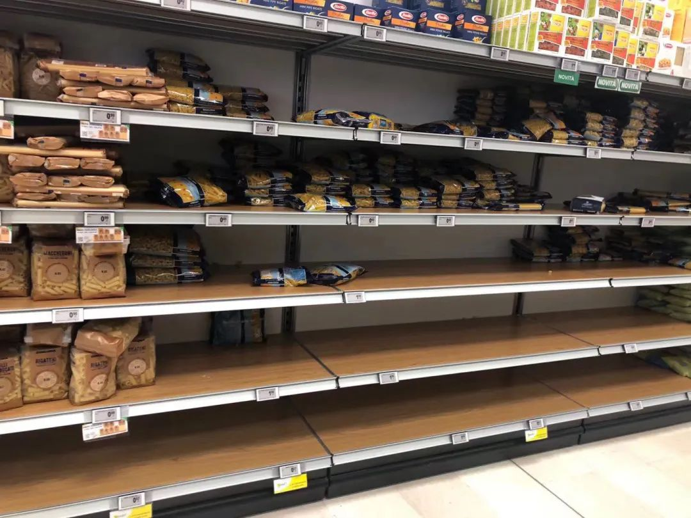
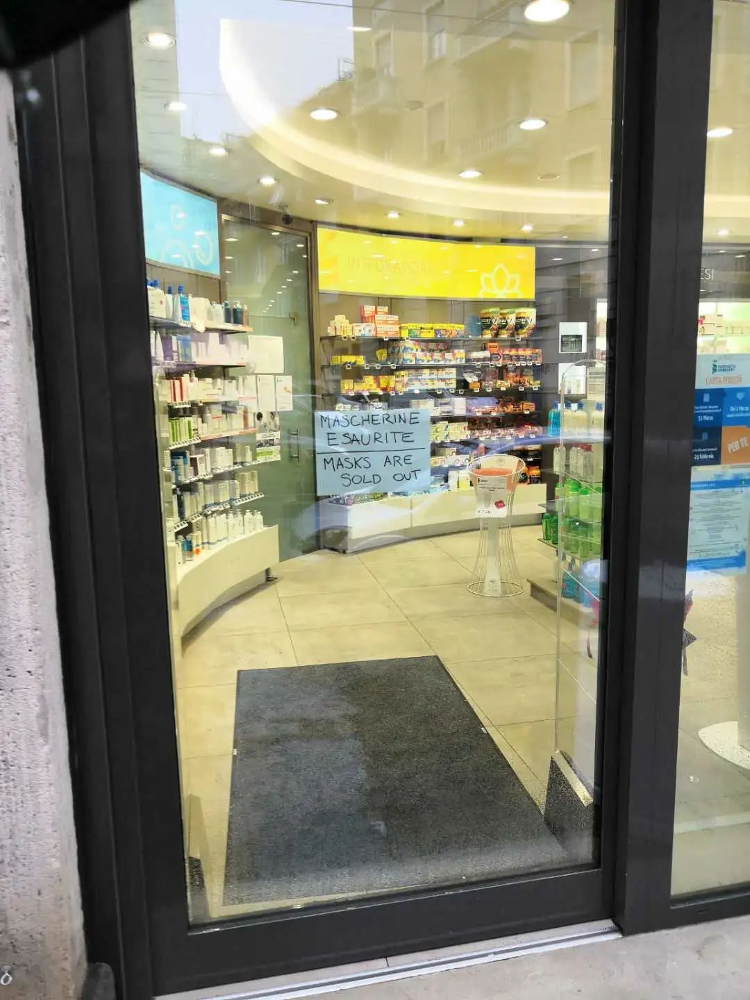

意大利疫情日记③：口罩和消毒液就这样解决了？
原文链接 备份链接 体坛周报全媒体驻意大利记者 王勤伯 （一） 保加利亚卢多戈雷茨欧联杯1/16决赛来米兰打客场，球员一路都戴着口罩，甚至在进入球场的时候也戴着，只有出场比赛没有戴。 空场比赛将是本周末意甲联赛的普遍景象。昨天发表在体坛 …
澎湃新闻特约撰稿 孙品烁
邓宗宇/央视新闻
当地时间3月5日18时，意大利民防部门负责人、新冠病毒应急委员会专员安杰洛·博雷利在例行疫情新闻发布会上表示，意大利现存新冠病毒感染肺炎病例为3296例，较前一日增长590例；死亡病例148例，较前一日增长41例；治愈病例414例，较前一日增长138例。该国目前累计新冠肺炎确诊病例达3858例。
5日，意大利西北部的瓦莱达奥斯塔大区首次报告两例病例，这也标志着该国20个大区已全部出现了新冠肺炎确诊病例。在同一天，意大利总理孔特宣布，政府拨款75亿欧元用于支持该国的家庭以及企业应对疫情带来的紧急状况。
我叫孙品烁，今年27岁，在米兰理工大学读土木工程。
去年12月底，我刚刚从季节性流感中恢复，看到国内新冠肺炎的消息也并没有多关注，以为只是普普通通的一次流感。然而，短短半个多月的时间，风云突变。但那时，远在万里之外的意大利的我，没有感受到现实生活出现任何不同。
第一次真正为疫情感到紧张是在1月23日的早晨。微博上有人爆料说，有来自武汉的旅行团当天早上抵达了米兰，并且有人已经出现咳嗽等疑似症状。我在惊惶之下赶紧去买了口罩，戴着口罩等公交车时还有意大利大爷问我为什么要戴，是不是生病了。
接下来便是武汉“封城”，中国全国严阵以待。意大利这边，一对武汉的老夫妻1月30日在旅行途中被确诊，意大利也因此开启了为期6个月的国家紧急状态。本以为事情到此就收尾了，毕竟病人已经迅速被隔离，加上意大利的医疗水平国际一流。“严防死守”下，我以为疫情不会在意大利进一步扩大。
没想到的是，仅一周后，我成了疑似病例。
我从疫情旁观者变成了一线体验者
2月7日早上，我出现了发烧的症状。由于两周前去机场接了刚从国内回来的女朋友，并且之前的流感结束后持续咳嗽了近两个月，为了稳妥起见，我拨打了意大利卫生部针对新冠疫情开设的专线1500，并前往位于莱科的亚历山德罗·曼佐尼（Alessandro Manzoni）医院急诊室就医。
在听说我接触过从中国境内返回人员时，接诊医生大惊失色，直接给我开了黄色小条。
在意大利的公立医院急诊室就医时，医生会给病人发放不同颜色的小条，红色为最危重，黄色次之，随后是绿色和白色。一般情况下，领到绿色小条要等待十小时左右才能被接诊。这是我多年来首次体验到了意大利人的高效，从打电话一层层向上请示、安排我住入隔离病房、准备好核酸检测，这一切居然在半小时内就完成了！
接着我忐忑不安地度过了24小时，期间得知我被隔离的同学们也有些许恐慌。如果那时我被确诊了，意大利的“1号病人”就不会是那位38岁带病跑马拉松的马蒂亚了。

在隔离病房治疗
当时我们也担心身边的一些意大利人会用不好的眼光来看待当地的华人和华侨。所幸我最后核酸检测结果是阴性，第二天我被转到了普通病房。住院四天，医生始终没有查清楚我发烧和咳嗽的原因。

隔离病房的伙食
入院时，医生跟我说治疗是免费的，但我最后收到了一张费用高达1900欧元的帐单（约14000多元人民币）。因为我是留学生，每年要去续学生居留证，因此买了医疗保险。在医院缴费处大妈的指导下，我去当地的卫生院办了医疗卡，再走医疗保险付了这笔钱，自己只掏了20欧元的材料费。

病毒检测呈阴性的报告
生活就是这么的奇妙，原本我抱着静观疫情形势发展的心态，突然就变成了疫情第一线的体验者。
不肯“吃亏”的酒吧业主和意甲联赛
2月20日，首例新冠肺炎确诊病例在米兰附近的科多尼奥出现了。这位“1号病人”马蒂亚是个社交达人，新闻报道说，他在确诊前约半个月内参加了马拉松、球赛等多次参加聚集性活动，跑遍了10个城市，并在各种活动中接触了至少5万人。
从2月24日至25日的24小时之内，意大利确诊了超过100名病例，疫情迅速扩大，政府的反应不可谓不迅速。2月20日当天，疫情暴发地区的火车停开，政府两天内封锁了伦巴第大区的11个市镇，并且对米兰及其周边地区采用了宵禁政策，酒吧等营业场所晚上6点之后不得营业。疫情最严重的伦巴第大区和威尼托大区迅速宣布停课。
与之形成鲜明对比的是意大利普通民众的态度。首先是酒吧业主们，居然联合起来抗议宵禁政策，最后政府只得做出让步，允许晚上营业，但是要顾客间保持一定距离并且限制人数。其次是普通市民，疫情扩大后，超市人头攒动，意面、水、面包、消毒用品被一抢而空。意大利面（pasta）中最先被抢完的果然是细面条（spaghetti）, 意大利人对它的爱最为深沉。

疫情爆发后的esslunga超市，意面被抢光，剩下空心粉
大街上能看到戴口罩的人清一色全是黄皮肤黑头发的同胞们。一来，市面上的口罩大多已经让华人收购寄回国内支援了；二来，兴许是文化的不同，大多数意大利人认为生病的人才戴口罩。
最关键的是，大多数人对于疫情的估计过于乐观，并没有意识到它的可怕。就以我的经历来说吧，因为咳嗽一直没好，我就自行前往药店买药，过程中药店的药剂师没有询问任何病症，偌大的药店也只有我一人戴着口罩。

贴着“口罩已售完”告示的药店
最近两天意甲联盟对于意甲联赛的处理更是令人啼笑皆非。原定于3月1日在都灵打响的尤文图斯主场对阵国际米兰的“意大利国家德比”，最初意甲联盟决定在原时间空场举办，没过多久便改为推迟至3月2日，仅限皮埃蒙特大区的球迷进入观赛。原因仅仅是因为皮埃蒙特大区的第一条禁令只到3月1日为止，这样可以避免空场带来的门票损失，也难怪国际米兰的主席张康阳在Instagram上怒斥意甲联盟，表示健康因素应该放在首位，而不是门票等其他无关紧要的利益。
民众渐渐有了防疫意识
兴许是在经济、旅游业相继受挫，各方阻力的重压之下，前期反应灵敏的意大利地方政府于3月2日重新开放了米兰大教堂，佛罗伦萨宣布将于3月6日至8日免费开放公立博物馆，威尼斯政府更是要求当地酒吧免费提供开胃菜以刺激消费，全然不顾病毒专家的呼吁。意大利国家旅游局则在推特上表示，意大利是一个安全的国家，意外长迪马约更是呼吁别国解除对意大利航班的封锁。
虽然意大利的医疗水平位居世界前列，但疫情爆发后医疗资源透支，使得医院只能收治有症状患者及重症患者，轻症及无症状阳性患者只能居家隔离。在这种情况之下，有的同胞选择了转机回国，更多在意华人选择了深居简出。
在口罩四处难求的局面下，米兰华人运营的外卖平台采用了“点外卖随单附送免费医用口罩”的方式做公益，我就是通过这个渠道拿到了一些口罩，避免了“裸奔”出门的险境。

随外卖免费发放的医用口罩
3月3日，意大利总理孔特签署了新的紧急法令，对红色区域（被封城的区域）和黄色区域（如米兰等疫情较为严重的区域）做出了新的规定。在口罩短缺的现实情况下，意大利政府呼吁没有感染区域的人没必要戴口罩是无奈之举。

周日的米兰地铁站
之前网上曾有传言称意政府“只公布重症患者以免引起恐慌”，但事实证明这是谣言，每日的疫情信息仍然是公开透明地公布的。公共交通并没有完全停止，但人流量的减少证明了普通民众也渐渐有了防疫的意识。我就读的米兰理工大学和其他大学也积极了开展网课教学。值此时刻，我们自身能做的也只能是少出门、戴好口罩，同时相信与等待意大利政府的防疫措施。
本期编辑 常琛
推荐阅读


原文链接 备份链接 体坛周报全媒体驻意大利记者 王勤伯 （一） 保加利亚卢多戈雷茨欧联杯1/16决赛来米兰打客场，球员一路都戴着口罩，甚至在进入球场的时候也戴着，只有出场比赛没有戴。 空场比赛将是本周末意甲联赛的普遍景象。昨天发表在体坛 …
原文链接 备份链接 境外累计确诊病例即将超过2万。美国很可能有上千例潜在感染病例以及他们的密切接触者未能被及时发现和隔离，到目前为止，“我们看到的美国官方病例数字可能只是冰山一角”。 文 |《财经》数据研究员徐进 图 |《财经》 …
原文链接 备份链接 武汉已从阻击战转为反击战。欧洲疫情迅速蔓延，单日新增近千 2020年2月26日，在马来西亚雪邦，从武汉撤回的马籍民众抵达当地机场机场。图/ 法新 文 |《财经》数据研究员徐进 图 |《财经》视觉中心 编辑 | 郝洲 …
原文链接 备份链接 新冠肺炎疫情期间，少出门、勤洗手、戴口罩已经深深地刻在国人脑子里。不过，在疫情逐渐扩散的欧洲，戴口罩的反而成为异类，可能被“歧视”。 女议员因戴口罩被赶出议会大厅 根据当地时间3月3日18时意大利卫生部公布的最近数据， …
原文链接 备份链接 *************▲*************春天来了，学校门前的路却空空荡荡。 （沉白白/图） 全文共4034字，阅读大约需要7分钟。 威尼托大区本周关闭了学校，却没有要求大家在家隔离。看着窗外三三两两去踢 …